Learnium
Product Design & Dev
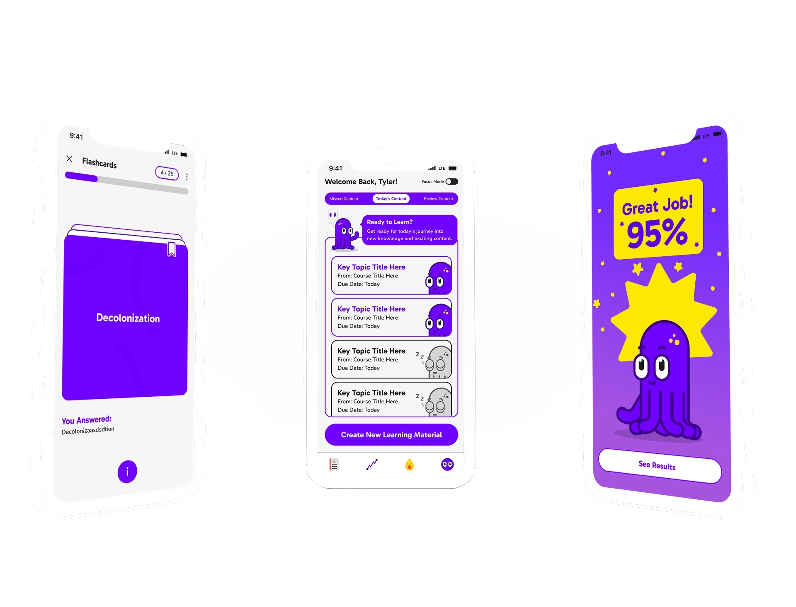
Overview
Learnium is an AI-Powered mobile app in edTech industry. Learnium simplifies the learning process by transforming textbooks into interactive content, provides a dynamic learning schedule, and keeps learners engaged in practice and tests by rewarding their progress.
This project won first place in the capstone presentation event at Langara College ✨
Download Proposal-
 Impact
Impact
Collaborating on an agile team, we successfully conceptualized, designed, and developed a functional application that addressed a real-world learning need. Usability testing demonstrated how AI-powered tools can optimize learning progress. Our MVP won the first place at Langara College’s capstone event.
-
 Hats Worn
Hats Worn
I led UX research & design, performed user research & market analysis, clustered data, crafted persona & user journey, created user flow & wireframes, communicated design rationales, moderated usability testing & UX writing, contributed to UI design critiques, designed proposal.
-
 Tools
Tools
Adobe Tools(Ai, Id, Ps) & Figma for Design - Google Forms for Survey - Jira for PM
-
 Timeline
Timeline
13 Weeks, from Ideation to Presentation
-
 Team
Team
4 UX/UI Designers
4 Full-stack Developers -
 Platform
Platform
Android Mobile Application
IOS Mobile Application
Empathize
In today’s fast-paced world, the need for effective learning solutions is greater than ever. Many people use passive learning methods, such as reading or watching videos, which often lead to a poor understanding and retention of key information. In contrast, interactive learning offers opportunities for engagement through quizzes and flashcards, helping learners track their progress, identify areas for improvement, and customize their learning experience.
In a research involving 300 million students around the world, Professor John Hattie of the University of Melbourne has evaluated 252 variables related to student achievement. Hattie calculated a score or effect size for each variable according to its impact on the students’ learning. In this project, we focused on some of these variables with considerable potential to accelerate student achievement. We combined this variables with user interviews result to come up with the application’s features.
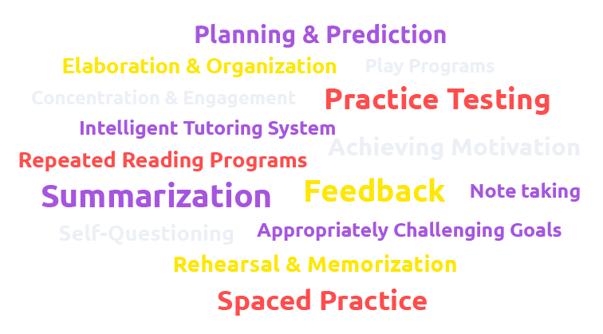
Interactive learning helps learners retain knowledge and improve performance more effectively than passive methods.
User Research
User Interview
To gather qualitative data about users, we conducted interviews. We categorized users into three types: high-school students, college students, and professionals seeking career shifts or promotions. Our interview questions aimed to understand their needs, frustrations, and goals:
- What are their frustrations when studying topics that require reading and memorizing?
- What method of studying works best for them?
- How do they keep engaged in learning a specific topic without getting bored and quitting?
- How do they ensure that they are competent after studying a topic?
- How do they prepare for an upcoming exam?
- What assistive methods do they use to learn more efficiently?
Interpret & Analysis
We conducted nine user interviews and analyzed the responses using a thematic method. This involved reviewing, summarizing, and categorizing answers to identify key pain points and goals.
- Import text from image/OCR
- Import text from PDF
- Import through copy/paste
- Process imported material
- Organize content
- Flash card & summary
- Chatbot
- Focus mode
- Listen to short notes(?)
- Generate quiz
- Scoring system
- Repeated testing
- Question types
- Dynamic schedule
- Progress for each topic
- Positive reinforcement
- Timely progress
- Gamify
- Positive reinforcement
- Daily challenge
- Group study(?)
Survey
In another research, we designed a survey and gathered answers from 40 college and university students. The purpose of this survey was to modify the quiz feature by asking following questions:
- Frequency of taking quizzes or practice questions when preparing for exams
- The optimal number of questions in the learning apps
- Relationship between the difficulty of the exam material and the number of questions in a quiz
- Types of regular academic tests(MCQ, Written, True/False, Other)
- Relationship between taking quizzes/practice sessions and competency
Persona
Keeping up with all coursework and extracurricular programs is a challenge. I need help to balance my schedule and get better results.
24 Years Old
Highlights
- Education: 3rd-year bachelor’s student in Art History
- Cultural Status: A second-generation immigrant who likes to study her mother language to keep in touch with her cultural roots.
- Learning Environment: Primarily studies in a quiet and organized home environment. However, she spends long time commuting to school or work and she prefers to study during this time.
- Learning Style: Visual learner who prefers interactive and visually engaging content.
- Learning Goals: Her short-term learning goal is maintaining a high GPA and her long-term goal is pursuing a career in art curation or museum management.
- Tech familiarity: Tech-savvy in using different apps and websites to improve her learning process.
Applications
 Duolingo
Duolingo- Quizlet
 Chat GPT
Chat GPT Notion
Notion
Core Needs
- Motivation: Ava requires a learning platform that inspires her to excel in her studies. Personalized progress tracking and achievement recognition are essential to keep her motivated and driven to succeed.
- Focus: Ava needs a distraction-free interface with tools to manage time, set study goals, and track progress.
- Reliable Source: Ava needs a learning platform that offers accurate content. This ensures she learns with confidence and avoids incorrect information.
- Tech-Assisted Learning: Ava seeks interactive lessons, multimedia resources, and adaptive tools for efficient learning.
- Clarification: Ava needs a platform that clarifies complex concepts and resembles an instructor in her learning process.
Frustrations
- Time management: Ava struggles to manage time and maintain balance with her busy academic, extracurricular, and part-time work schedule.
Market Research
While there are existing e-Learning platforms and tools, “Learnium” differentiates itself through its unique combination of features:
AI-Powered Content Generation
Few competitors offer AI-generated quizzes, flashcards, and summaries from user-uploaded content.
Structured Learning Material
Learnium identifies key topics from imported material and creates structured learning sessions, simplifying the learning process.
Dynamic Study Plan
Learnium adapts study sessions to users’ preferences and exam dates, adjusting to quiz results and progress to ensure all necessary topics are covered.
AI Assistant
The AI Assistant is a chatbot that answers questions using only imported material, providing detailed explanations and examples to clarify complex concepts, an exclusive feature of Learnium.
Focus Mode
It temporarily silences notifications, adjusts screen settings for optimal readability, and provides a distraction-free environment for deep learning. Only Learnium offers this feature to maximize the learning efficiency.
Progress Tracker
Learnium uses the results of the quizzes to show which areas user did well and which areas need improvement. It also keeps a track of the learning progress in specific courses and key topics. Other existing applications also provide this feature in different forms.
Motivation Factor
Learnium engages learners with Dr.Lumi, a mascot delivering motivational messages, and a daily challenge feature that encourages learning even during downtime, setting it apart from competitors.
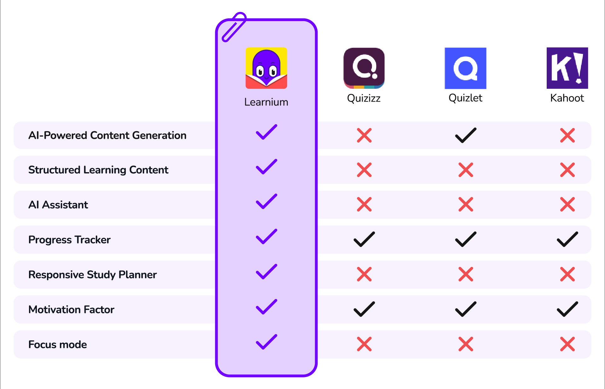
Main Features
Interactive Content
Learnium creates interactive content by uploading PDFs, pasting text, or using OCR on book photos. Leveraging Generative AI, it identifies key topics for each session to create including quizzes, flashcards, and summaries, ensuring accuracy and structured learning experience.
Dynamic Study Planner
Learnium personalizes study sessions based on learning preferences and exam dates, adapting to progress and quiz results. Unlike fixed schedules, it dynamically adjusts content and pacing to prevent overwhelm or boredom, making sure meeting deadlines.
Progress Tracker
Learnium tracks quiz results to highlight strong and weak areas, monitor progress in courses and key topics, and allow learners to take additional quizzes to reach competency.
AI Assistant
Dr.Lumi, an AI chat assistant, answers questions using only imported material, providing clear explanations and examples to help learners understand complex concepts.
Daily Challenge
Learnium’s daily challenge boosts knowledge retention and encourages consistent app engagement, turning free moments into productive learning.
Defining Principles
To form a shared understanding among the team, we discussed the principles of the application and how it organizes the imported data, creates a study plan, and gives feedback on the progress:
- Course: the whole learning material which is created from an imported content. It includes several key topics
- Key Topic/Topic: The identified titles/headings in the course. This is the basic learning unit based on which flash cards, summary and quizzes are created
- Quiz: The exam for each key topic
- Comprehensive Test/Test: The exam from course
- Completed Topic: When a user takes at least three quizzes for a topic and score more than 80% (B+) in average, the key topic is considered completed
- Completed Course: When all key topics in a course are completed, or the user has taken at least three comprehensive tests with an average score of 80% or more, the course is considered completed
- Active Course: Some or all of key topics are not completed yet
User Flow
The user flow consists of four main components. The first allows users to import material and set due dates, catering to both professionals and casual users. The second flow focuses on study methods and includes a dynamic study planner that adapts to due date changes and content volume. The progress flow tracks both topic-based and time-based learning progress. Lastly, the daily challenge flow aids users in recalling previous learning materials.
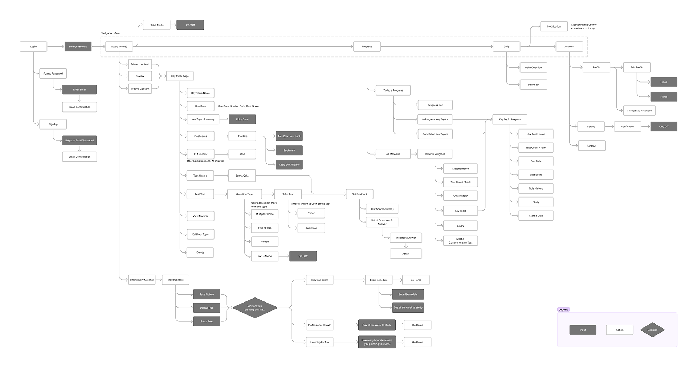
Wireframe
After confirming the user flow in the team meetings, we created the wireframe through multiple iterations. In some sections, we noticed that the wireframe needed to be changed for a better user experience. These changes led to changes in user flow, as well. In the final version, we added annotations for the developers to prevent confusion and maximize efficiency.
Based on the user flow and modified features, the wireframes are categorized as follows:
- Create New Course & Access Permissions
- Study (Home Screen)
- Material & Editing
- Key Topic & Editing
- Summary & Flash Cards
- AI Assistant
- Quiz and Result
- Check Progress
- Daily Challenge
- Profile
Study Flow Iterations
This is the first page that the user views, after logging into the application. For a learner who's been using the app for a while and imported content, the learning schedule is shown as Today's Plan. It consists of three sections:
- New content that is planned to be learned today
- Missed content from previous days which is content that the user hasn't started yet
- Review includes content that the user hasn't got an average of 80% or more in the taken quizzes
In the first iteration, we wanted the user to be able to see all the content categories at a glance. That's the reason we incorporated Next Days’ Plan, Recent Materials, All Folders, and Create New Learning Material on the same page as Today's Plan, as follows:
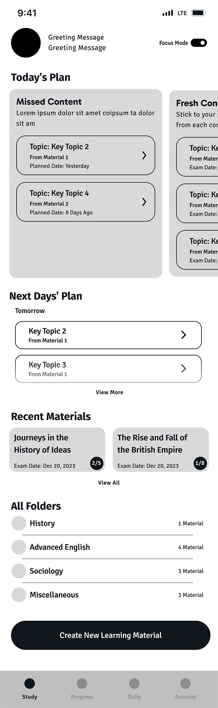
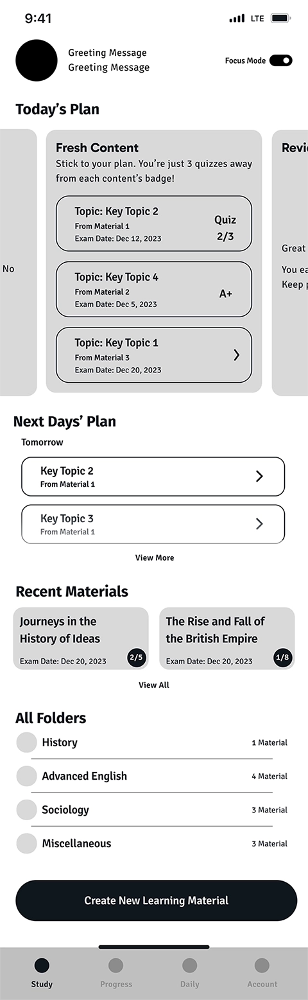
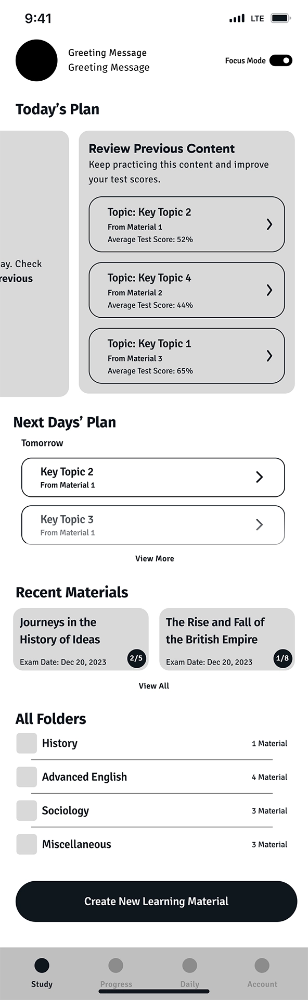
In the user testing, we noticed that this design confused the users and they couldn't find the main intended actions on the page. Therefore, in the second iteration, we removed all unnecessary sections from the home page to help the user focus on the most important action on the page which is starting the Study.
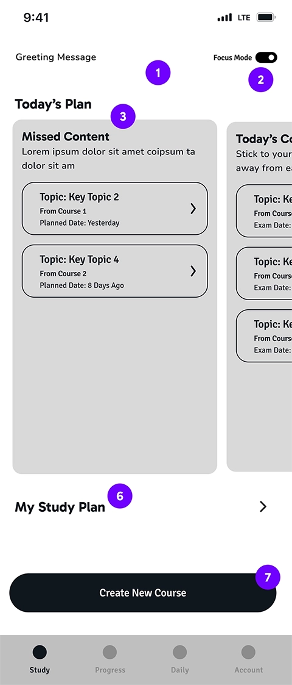
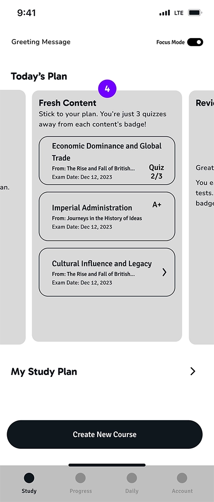
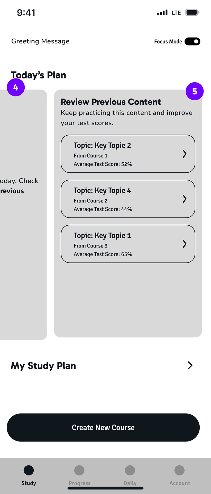
Wireframe Annotations
- The character and greeting message
- Turns on and off the focus mode
- Missed content includes the key topics which are not completed at scheduled time. The user sees this part of carousel when there is at least one missed content
- Today’s content includes key topics that are planned for today. If missed content is empty, the user sees this part of carousel when opening the app
- Review content include the key topics that user has already taken quizzes for, but the average score is below 80% and it means the key topic isn’t completed yet and needs to be reviewed. If there’s no missed content and today’s content, the user sees this part of carousel when opens the app
- Open page 6 to view all future and completed key topics
- Takes the user to the “upload content” page
In the final iteration of the high-fidelity mockup, we transformed the carousel into tabs to free up more space for the text. This was an essential improvement since the app is text-heavy, and we needed to utilize the space efficiently. Moreover, we removed the Study Plan section from the home screen to keep it focused on what learners need to do NOW. Along with this change, we modified the UI design in a few iterations to segregate the tabs. The last result is as follows:
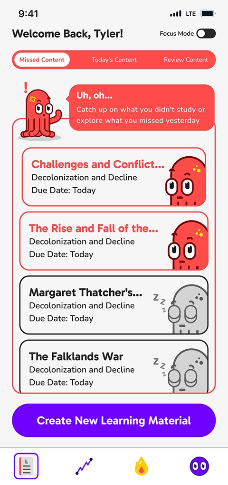
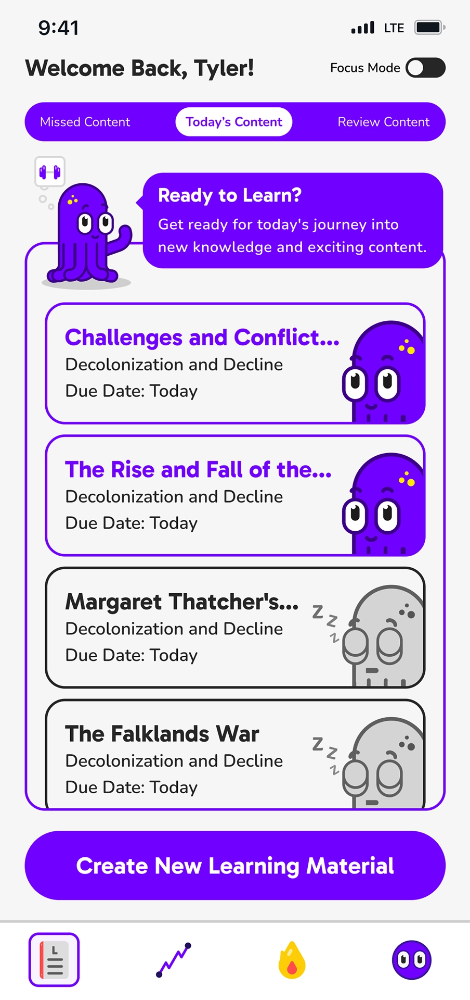
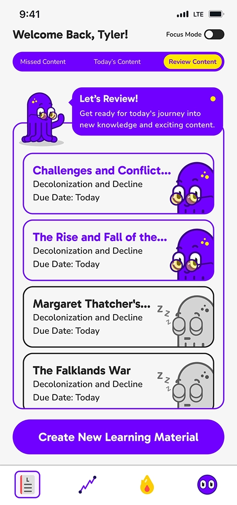
Flashcards Iterations
We reviewed some famous flashcard applications to understand the users' mental models. To ensure serving users with different learning preferences, we decided to design two types of flashcards:
- Flashcard with the Phrase on the first side and the Explanation on the second side
- Flashcard with the Explanation on the first side and the Phrase on the second side
In the first iteration, we provided an input field on the second-type flashcard enabling the users to type down the phrase, if it helps them memorize. With a toggle below the flashcards, users could decide which type of card they prefer to see. Also, a written guide was designed to help navigate through the cards. The first iteration was designed as below:
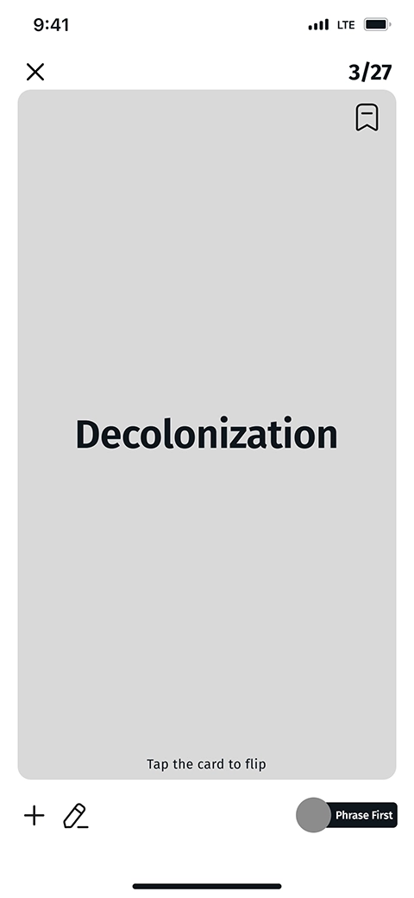
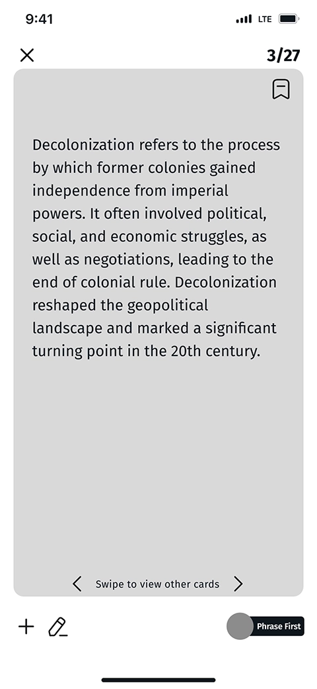
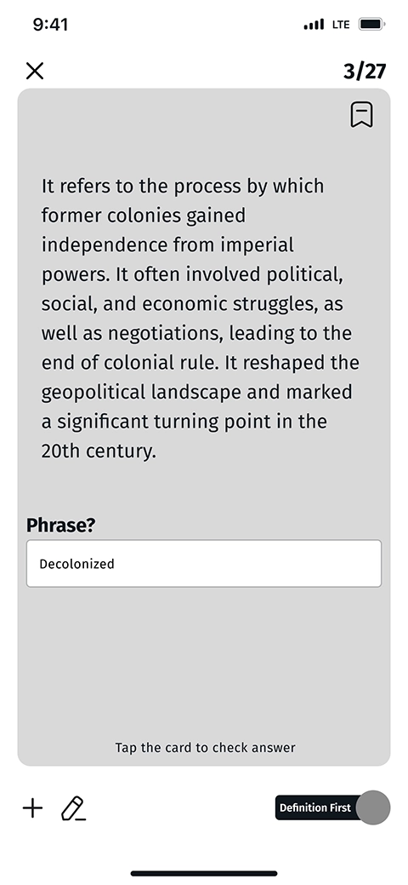
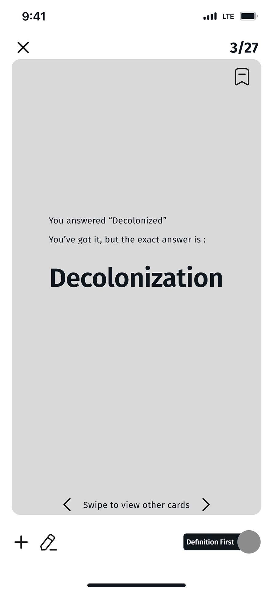
In the second iteration, we added a page to set up the flashcards type, before starting the learning session. This helps learners keep concentrated on learning, without being distracted by the flashcard type toggle. The setup page also enables users to turn on focus mode which mutes the phone's notification for a while:
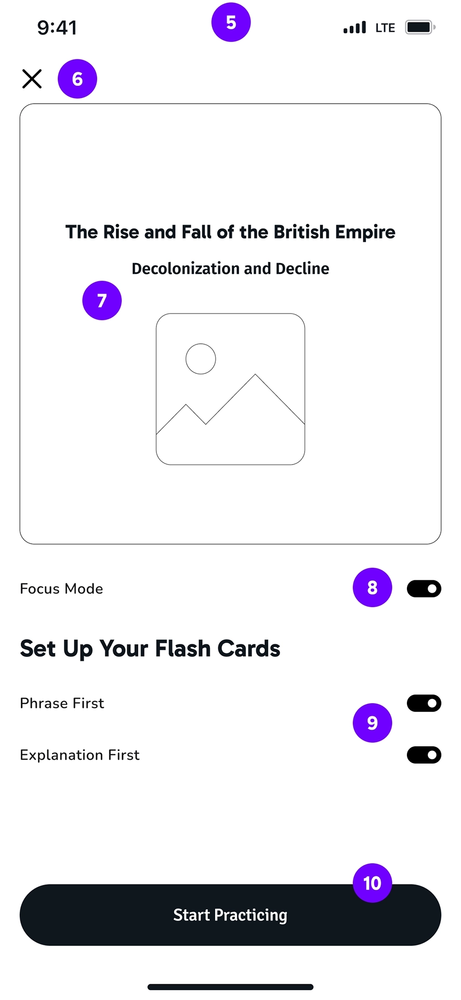
Also, to make the screen less distracting, we moved the Add and Edit icons to a menu on top of the cards. On the other hand, in the first iteration, the typing was possible only on the second-type flashcard. We assumed that users might be reluctant to type long texts as descriptions. However, the user testing showed that for some learners, this is a helpful feature and they can utilize it with the help of the speech-to-text feature on most phones.
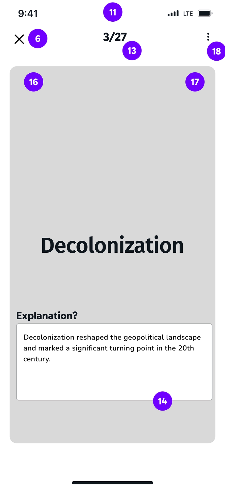
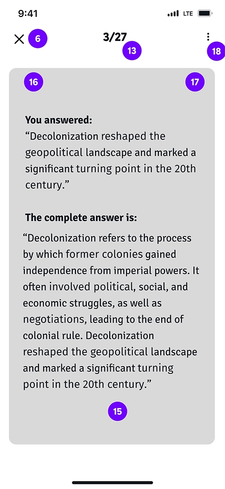
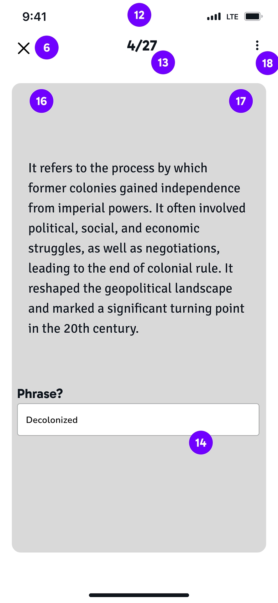
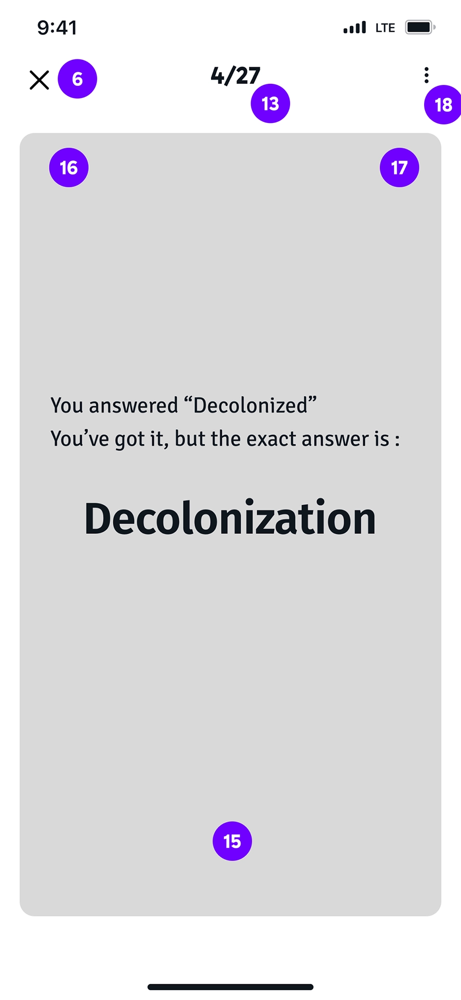
Wireframe Annotations
- Set up flash card
- Takes the user back to the page from where started flash card (course or key topic)
- Name of course and key topic and a media (if the flash card is for course, only name of course appears here)
- The initial condition of focus mode in this page is off
- Choosing the type of flash card that user want to see. At least one must be toggled on. Both of them can be on as well
- Opens the first card
- Phrase first card shows the phrase on the first side of card and the explanation on the other side
- Explanation first card shows the explanation on the first side of card and the phrase on the other side
- Number of current flash card comparing the total number of flash cards
- User can input the answer and tap or tap without answering. Tapping in both conditions flips the card to see the other side of the card
- Card’s second side
- If the user wants to go back and forth through the cards, left and right swiping is used. Left swipe goes forward
- Right swipe goes back
- Menu
After testing multiple flashcard designs with users and stakeholders, we finalized a simple high-fidelity version. Observing varied navigation habits, we added a guide and color differentiation between card sides to enhance usability and reduce confusion.
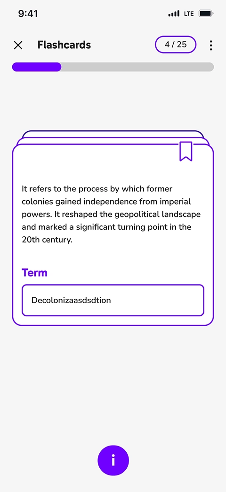
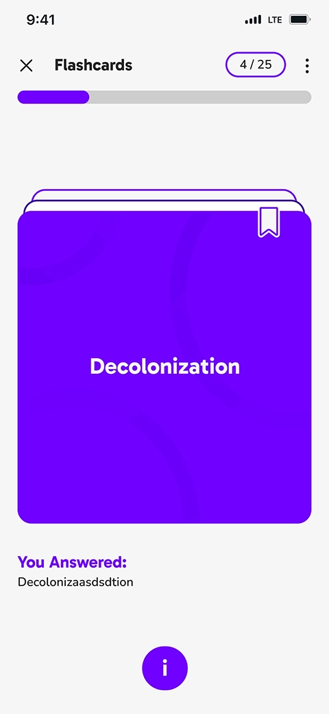
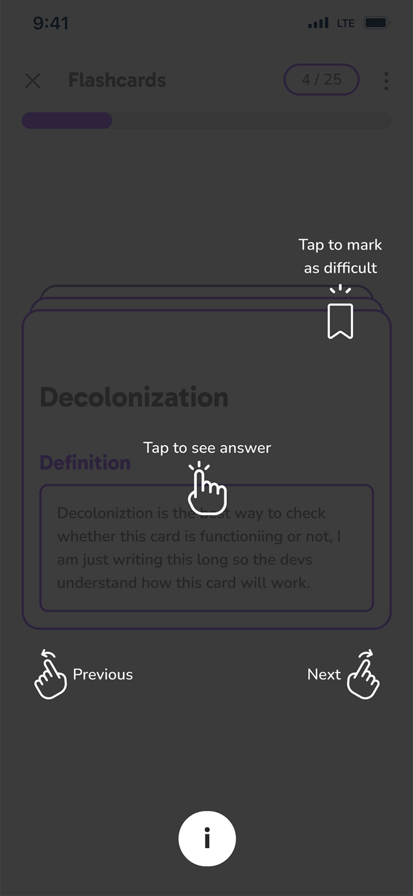
Guided and color-coded flashcards improve usability by accommodating diverse user navigation habits.
Reflections
Lesson Learned
- Iterative design:
There's no perfect solution for a design challenge since users have varying mental models, and each solution has its supporters and detractors. The key is in the iterative process and user testing. We encountered this in designing the flashcards, as different users had differing expectations during app testing. The final design emerged from this ongoing process, shaped by feedback and testing, ensuring it meets the needs of current and future users.
If We Had More Time
- Serivng a wider range of learners:
In the project kick-off session, we discussed about people with special needs and how text-to-speech feature can simplify the study process for them. Later we needed to narrow down the project scope and this feature was pushed to the extension plan. However, I believe to make an accessible app for a wider range of learners such as people with dyslexia, this feature should be implemented.
See More of My Work

Enterprise Service Design

Analytics Web-App Design

Ecommerce Design/Dev

UX/UI Case Study

UX Case Study